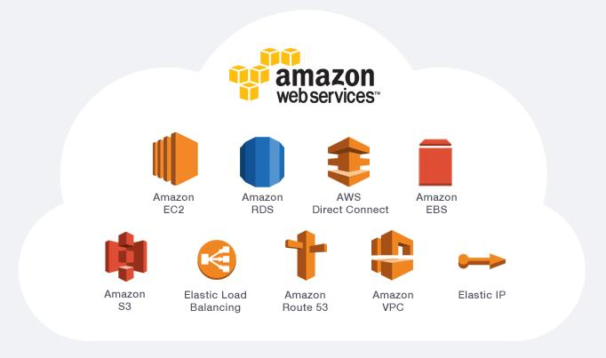

Getting Started
Amazon Web Services is a paid service, though students can request limited access to the "free tier", which enables access to a small subset of Amazon's services. This can be found at AWS Educate. Follow the prompts to register as a student - there is an option to register without requiring credit card details, though if you do register your card, your account will be credited with $40 to spend.

Amazon Web Services
Launched in 2006, Amazon Web Services was set up using Amazon's existing global network of high performance computers, to provide businesses with a quicker and cheaper alternative to setting up their own physical server farms. The network is used by Amazon itself to host its online retail service, and many large businesses make use of the platform, either as a primary source of distributed computing hardware or as a backup service which can be launched in response to peak demand. In order to satisfy legal requirements and data protection laws, the system is split into regions which are, by default, inaccessible from one another.
Some notable services:
-
EC2: Elastic Compute Cloud is a service for launching virtual machines on Amazon's hardware, from single instances with modest hardware to large networks of powerful machines. The speed and scale of storage, memory and networking can be configured to fit the specific need of the machine, and units with specialty processors such as GPUs can also be specified. Clients pay by the hour for virtual instances.
-
S3: Simple Storage Service provides persistent, redundant and backed-up storage which can be accessed either through a web interface directly, or more commonly by other services such as EC2.
-
Database Applications: Products such as DynamoDB, ElastiCache and Redshift provide various methods for accessing and monitoring databases, optimised for various capacities and speeds.
-
Web applications: CloudFormation, Elastic Beanstalk, CodeDeploy and many other services exist for propagating code to servers in different regions. Continuous integration code testing tools can be set up with AWS.
-
And many more : Lumberyard for video game development; Simple Email/Queue/Notification Service for sending notifications or messages; Numerous Amazon Retail APIs; and applications such as Amazon Lambda to trigger events within other AWS services.
Pricing
In order to supply computing resources to clients of hugely different scales and requirements, Amazon provide a number of different pricing schemes for its EC2 service.
-
On Demand: The most expensive option, with no commitment or up-front payments, but a specified hourly rate. Designed for short workloads or when demand for compute power is unpredictable.
-
Spot Instances: Available to the highest bidder, Spot Instances use spare EC2 capacity. Bidding starts at 90% off the current On-Demand price, though at periods of high demand, may not be available at all. Ideal for applications when the start and end time of a job are flexible.
-
Reserved Instances: By paying up-front for long term access to AWS, clients can save up to 75% on the price of On-Demand instances. Amazon recommends Reserved Instances for steady-state workloads such as static webpages.
-
Dedicated Host: Dedicated hosts can be purchased either on-demand or as a reservation. These are physical servers which are dedicated for your purposes. This allows customers with software licenses bound to physical (rather than virtualised) machines to use their software with AWS.
Uses
Amazon Web Services could be useful for your research! The platform is flexible enough to
- If you are close to handing in a report and need to run a large simulation fast, and you don't want to wait in queues for HPC.
- If you are working with commercial software which isn't installed by default on HPC, but you don't want it using up all the time on your own machine.
- Lots of different types of EC2 machines available - On Demand Pricing:
- General Purpose - m4.16xlarge = 64 CPUs, 256 GiB RAM, $3.447/hour.
- Compute Optimised - c4.8xlarge = 36 CPUs, 60 GiB RAM, $1.591/hour.
- GPU Instances - p2.16xlarge = 64 CPUs, 732 GiB RAM, $14.4/hour.
- Memory Optimised - x1.32xlarge = 128 CPUs, 1952 GiB RAM, 2x 1920 GiB SSDs, $13.338/hour.
- Storage Optimised - i3.16xlarge = 64 CPUs, 488 GiB RAM, 8x 1900 NVMe SSDs, $4.992/hour.
- If you need a higher performance computer reserved for you - why not pay a few hundred quid for an Amazon one for the duration of your PhD. Then all you need is a small laptop / Intel Compute Stick.
Exercise
In the Exercise you will be guided through launching an On-Demand AWS Instance, loading files from an Amazon S3 Bucket, running programs, and hosting a static webpage.